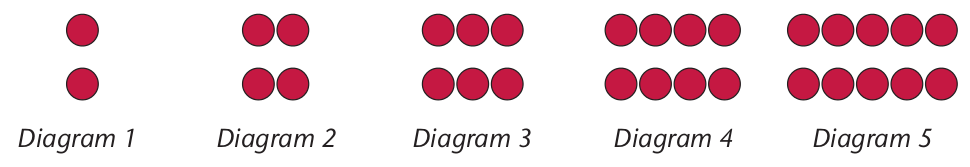
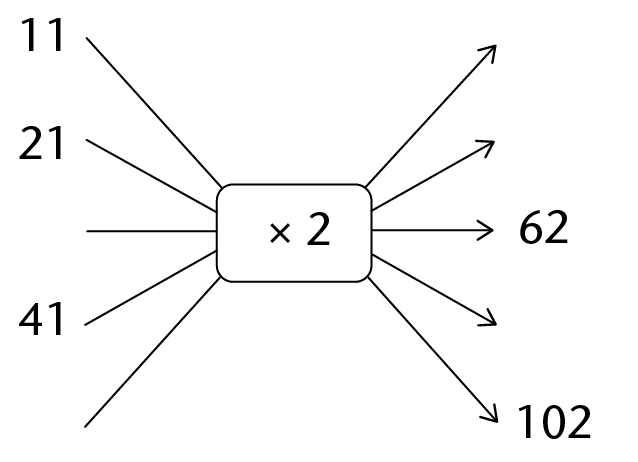
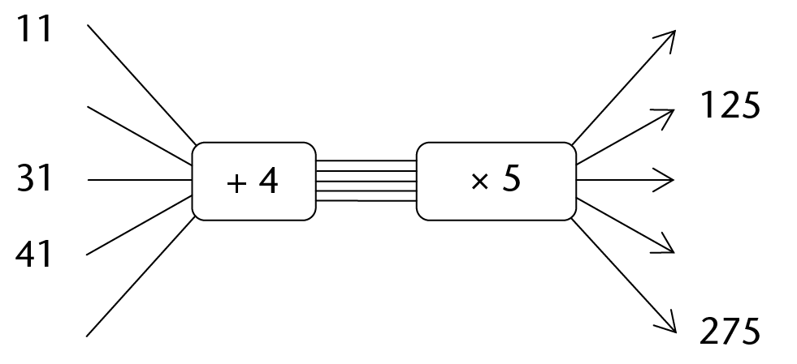
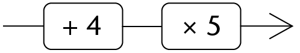

Algebraic expressions
In this chapter, you will learn about algebraic expressions. An algebraic expression is a computational procedure. Put differently, an algebraic expression tells you how to calculate a value. But an algebraic expression is also a value.
You will learn more about variable and constant quantities in this chapter and you will be required to identify these in formulae and number sentences.
Describing and doing computations
Different ways of describing a computation
1. The diagrams below represent arrangements of small circles. In every arrangement there are two rows of circles.

(a) The table below relates to the diagrams. Complete it.
|
Diagram number |
1 |
2 |
3 |
4 |
5 |
|
Number of circles per row |
|||||
|
Number of rows |
|||||
|
How to calculate the total number of circles per diagram ( rule) |
In every diagram, we can identify:
- the number of rows
- the number of circles per row
- the total number of circles per arrangement.
(b) What remains the same in the diagrams?
(c) What changes in the diagrams? In other words, what are the variable quantities in the situation?
(d) Complete the flow diagram.

(e) How many circles will diagram 11 have if the pattern is extended? Explain.
(f) What does the number 2 in the rule \(2 \times n\) represent?
The rule \(2 \times n\) can be used to determine the total number of circles in a diagram. The number 2 in the rule \(2 \times n\) remains the same all the time. We say it is a constant. \(n\) represents the number of circles per row and that is a variable, because it changes.
(g) What does the letter symbol \(n\) represent in the rule \(2 \times n\)?
Consider the sequence 1; 3; 5; 7; 9; ...
The numbers 2 and -1 remain the same all the time; we call them constants. The numbers in blue change according to the position of the odd number in the sequence. We call them variables.
The first odd number can be written as \(2 \times {\color{blue}1} - 1\).
The second odd number can be written as \(2 \times {\color{blue}2} - 1\).
The third odd number can be written as \(2 \times {\color{blue}3}- 1\).
2. (a) What is the tenth odd number?
(b) What is the thirtieth odd number?
(c) What is the hundredth odd number?
(d) What is the \(n\)th odd number?
3. The rule \(2 \times n - 1\) can be used to determine any odd number in the sequence 1; 3; 5; 7; 9; ...
What does the letter symbol \(n\) represent in the rule \(2 \times n - 1\)?
The rule \({\bf 2 \times n}\) can be used to calculate the total number ofcircles in a diagram if the number of circles per row is known.
The rule \({\bf 2 \times n - 1}\) can be used to determine any odd number in the sequence of odd numbers if its position is known.
In the questions above we have used the letter symbol \(n\) to represent:
- a changing number in the rule \(2 \times n\) (n represents the number of circles in a row)
- the position of the odd number in a sequence in the rule \(2 \times n − 1\).
4. (a) Complete the flow diagram.

We call the numbers on the left in the flow diagram the input numbers.
The numbers on the right in the flow diagram, and whose values depend on the input numbers, are called the output numbers.
(b) Which of the following instructions did you follow to calculate the output values of the following in question 4(a)?

Make a tick mark (✔) next to the correct answer.
A. Multiply the input number by 5 and then add 4.
B. Add 45 to the input number.
C. Add 4 to the input number and then multiply by 5.
5. Use 10 as input number and calculate the output number for each of the word formulae in question 4(b).
We may write \((x + 4) \times 5\) as an abbreviation of add 4 to the input number, then multiply by 5. \((x + 4) \times 5\) can be called a computational instruction or an algebraic expression.
The letter symbol \(x\), or any other symbol, can be used as an abbreviation for "the input number".
In the expression \((x + 4) \times 5\), the letter symbol \(x\) can be replaced by many different input numbers. The symbol x represents a variable quantity or a variable. If, however, the expression \((x + 4) \times 5\) is equal to 35, as in the number sentence \((x + 4) \times 5 = 35\), the symbol \(x\) represents only one value, and that is 3.
In the expression \((x + 4) \times 5,\) the numbers 4 and 5 are constants. In the number sentence \((x + 4) \times 5 = 35\) , x is an unknown value.
6. Write the abbreviations for the following computational instructions by using x for "the input number":
(a) Half the input number plus 2
(b) Multiply the input number by 6 and subtract 2.
(c) Multiply the sum of the input number and 3 by 10.
(d) Subtract 4 from the input number and multiply the answer by 7.
7. Cardo's teacher writes on the board: "Add 2 and then multiply the answer by 3."The class must use 5 as an input number and apply the computational instruction.
(a) Cardo uses 5 as the input number and writes: \((5 + 2) \times 3\).
Paul says \((5 + 2) \times 3\) is \(7 \times 3\) which is 21. Is Paul right?
(b) Explain your answer in (a).
(c) Represent this flow diagram as an algebraic expression:
8. Express each computational instruction as a flow diagram and then write the abbreviation (algebraic expression) with x as input number:
(a) Multiply by 4 and then subtract 8.
(b) Subtract 8 and then multiply by 4.
(c) Add 15 and then divide by 5.

(d) Divide by 5 and then add 15.

9. Describe each computational instruction in words:
(a)
(b)
(c)
(d)
10. Two algebraic expressions are given in the table. Use the given input values (\(x\) values) to determine the corresponding output values.
|
\(x\) |
1 |
2 |
3 |
4 |
5 |
6 |
|
\(6 \times x + 8\) |
14 |
20 |
26 |
|||
|
\(2 \times x \times (3 + 4)\) |
Relationships represented in formulae
Making sense of variables and constants in formulae
1. (a) Chris uses the formula \(P = 2 \times l + 2 \times b\) to calculate the perimeters of rectangles of differing lengths and breadths as indicated in the table. He also calculates the area of each rectangle using the formula \(A = l \times b\).
Complete the table.
|
Rectangle |
1 |
2 |
3 |
4 |
|
Length (\(l\)) |
24 |
6 |
8 |
12 |
|
Breadth (\(b\)) |
1 |
4 |
3 |
2 |
|
Perimeter \(P = 2 \times l + 2 \times b\) |
||||
|
Area \(A = l \times b\) |
(b) Rita calculates the perimeter of a rectangle in a different way. She adds the value of the length of the rectangle to the value of the breadth of the rectangle and then multiplies the answer by 2.
Write down the formula that Rita uses to calculate the perimeter of each rectangle. Test whether or not Rita's formula produces the same results as Chris's.
Questions 1(c) to (e) refer to the formula \(P = 2 \times (l + b)\).
(c) What does the number 2 represent in the formula?
(d) What is the number 2 called?
(e) Which letter symbols represent variables in the formula \(P = 2(l + b)\)? Explain.
(f) What can you say about the area of all of these rectangles?
2. Sindi calculates her father's age by using the formula \(F = x + 37\), where x is Sindi's age. Her father passed away when Sindi was 43 years old. How old was he then?
3. Jacob wants to buy the cheapest cell phone on the market. He has already saved R45 and decides to save R5 per week until he has enough money to buy the phone. The formula \(y = 45 + 5 \times w\) gives the amount of money (in rands) that Jacob has saved to buy the cell phone after \(w\) weeks.
(a) Complete the table. The first row has been done as an example.
|
Number of weeks (w) |
How to calculate \(45 + 5 \times w\) |
Amount saved (\(y\)) |
|
0 |
\(45 + 5 \times 0 = 45 + 0\) |
45 |
|
1 |
||
|
2 |
||
|
4 |
||
|
5 |
(b) The cell phone that Jacob wants to buy costs R90. Will Jacob have saved enough money to be able to buy the cell phone by the eighth week? Explain.
(c) Complete the table.
|
Formula: \(y = 45 + 5 \times w\) |
Explanation |
|
|
Which are constants in the formula? |
||
|
Which letter symbols represent variable quantities in the formula? |
4. In each of the following formulae, identify the symbols that represent variables and constants.
|
Symbols for variable(s) |
Constant(s) |
||
|
(a) |
\(y = 5x + 7\) |
||
|
(b) |
\(y = 100 + x\) |
||
|
(c) |
\(y = x \div 5\) |
||
|
(d) |
\(y = 5x\) |
||
|
(e) |
\(y = 0,7x + 2,3\) |